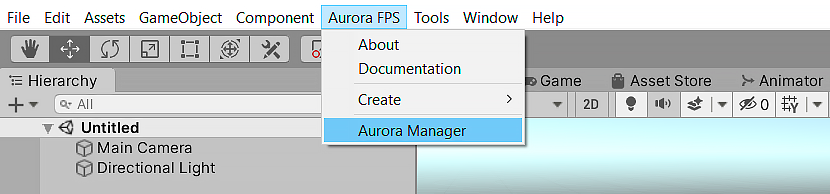
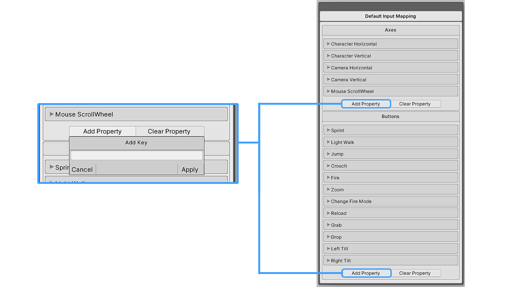

Overview
Input Mapping is a button map that a player uses to move around and perform various actions, such as shooting reloading, jumping, accelerating, etc.
Input Mapping allows you to change the buttons, both in the editor and directly during the game or in the game menu. You can create different maps for different platforms. Each player has a Input Controller component on which to add Input Mapping. During the game, the Input Controller processes the Input Mapping.
Create Input Mapping
You can create a new map in two ways.
- Through the Asset Menu, this is the standard Unity menu, called right click in the project window.
- Through the Aurora Manager window.
Method 1
1. Go to the folder in which you want to create the map.
2. Right-click and follow this path.
Create / Aurora FPS / Mapping / Input / Default
3. After this created map will appear in the root folder.
Method 2
1. Open Aurora Manager window.
Aurora FPS / Aurora Manager

2. Choose Mapping Asset section.
From the Mapping Type list, select Default Input Mapping. After that, all the input mapping assets that are in the project will be displayed. You can choose any of them and based on them create a new one by pressing the Duplicate button. This action will create a new map based on the map you have selected. The new map will have all the buttons that were contained in the parent map. This is convenient when you have configured a specific card and want to create a new one based on it, for example, for another platform or device.

Edit Input Mapping
Choose Input Mapping asset which you want to configure in project window and double click it.
Note
If you want to edit Input Mappping asset that used by your player. Find it on Input Manager compoennt in player prefab and double click it.
After double click in the Inspector window will be open Input Mapping.
For example lets change Sprint button
- Find Sprint in Buttons section and expand it.
- Change KeyCode value on any desired key.
- After this player will be sprinting by your setted key.
Note
All created maps contain default inputs, these are inputs that are used by the system. The default inputs can only be read and edited, but cannot be deleted. You can create your own custom inputs that you can edit, delete and call through the API.
Warning
The values contained in the Axes section are numerical values in the range -1 to 1. All values must be created in the standard Unity Input Manager (this applies only to the Axes properties).
Add Custom Input
To add your button or axis, click Add Property, a small window will open in which you need to enter the key by which this button or axis will be called. Then click Apply the property will be created in the map. With this key, you can call the created property through the API.
